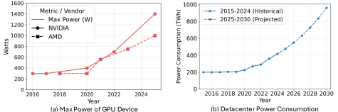

Power Delivery and Cooling
4.8.1Power Delivery, Cooling, and Practically Operable Capacity#
Device power has risen sharply: over the past decade the maximum power of a high-end NVIDIA or AMD datacenter GPU went from roughly 300 W to beyond 1000 W. Aggregated, that becomes an energy-infrastructure problem. The IEA estimates datacenters consumed roughly 415 TWh in 2024, about 1.5% of global electricity, and projects that demand will more than double — to around 945 TWh — by 2030, growing much faster than overall demand [1, 2].

Cooling has passed through three paradigms, each one lifting a thermal ceiling that had capped power. The passively air-cooled dual-slot PCIe form factor held thermal design power near 300 W for years, stretched recently to 600 W in parts such as the H200 NVL. Planar-mounted modules — NVIDIA's SXM and OCP's Open Accelerator Module — with large vertical tower heatsinks raised this to 1100 W in generations like the B300 SXM. Direct liquid cooling removes the bulky heatsinks entirely, letting rack-scale designs such as NVIDIA GB200 support per-GPU limits up to 1400 W in a much smaller footprint. That densification has a second benefit: it shortens the copper runs for scale-up networks like NVLink, improving signal integrity and interconnect latency.
Sufficient total power does not mean usable power. At a fixed distribution voltage, more rack power means more current: a 200 kW rack at 54 V draws roughly 3,700 A. Higher current means higher resistive loss and more heat, while a thicker conductor costs material and space. NVIDIA identifies physical limits of 54 VDC distribution beyond 200 kW per rack and proposes an 800 VDC architecture [3], since a higher distribution voltage carries the same power at lower current. Upgrading accelerators can therefore require rack- and facility-level power changes even where floor space is available.
Cooling links package design to facility energy the same way. NVIDIA specifies a maximum inlet-water temperature of 45 °C for its Vera Rubin MGX rack design, which can reduce chiller use in climates where outdoor air dissipates much of the heat [4]. But for a fixed thermal resistance between chip and coolant, warmer water leaves less temperature margin below the operating limit — so sustaining higher activity needs either better heat transfer or colder coolant.
Power demand also fluctuates within a job. Synchronized training alternates compute-intensive and communication-intensive phases, producing coordinated power swings across many GPUs [5]. Short-term storage can buffer these but has finite capacity, and throttling trades peak demand for slower progress. Two workloads with the same average power can therefore place very different demands on electrical infrastructure, depending on the size, timing and synchronization of their peaks.
At the largest scale, provisioning becomes campus-level. Meta planned roughly 350,000 NVIDIA H100 GPUs by the end of 2024 and about 600,000 H100-equivalents including other models [6]; xAI brought online a 100,000-GPU Hopper cluster [7]; Oracle announced superclusters scaling to 131,072 B200 GPUs [8]. Planning at that size needs dedicated substations, expanded transmission and long-term power purchase agreements, and sometimes on-site generation — so power availability and grid interconnection timelines are now binding constraints on deployment. Google paired datacenter expansion with hydropower procurement at up to gigawatt scale [9, 10]; Meta signed a 20-year agreement tied to the 1.1 GW Clinton Clean Energy Center [11, 12]; and Amazon, Google and Microsoft have all pursued nuclear-linked procurement including small modular reactor partnerships [13].
References
- 1.International Energy Agency. Energy and AI: Executive Summary. 2025.
- 2.International Energy Agency. Energy and AI: Energy demand from AI. 2025.
- 3.Mathias Blake et al. NVIDIA 800 VDC Architecture Will Power the Next Generation of AI Factories. 2025.
- 4.Kibibi Moseley, Kristen Perez and Pawini Mahajan. Scaling Token Factory Revenue and AI Efficiency by Maximizing Performance per Watt. 2026.
- 5.Esha Choukse et al. Power Stabilization for AI Training Datacenters. 2025.
- 6.Reuters. Meta ramps up AI efforts by building chip arsenal. 2024.
- 7.NVIDIA. NVIDIA Ethernet Networking Accelerates World's Largest AI Supercomputer, xAI Colossus. 2024.
- 8.Oracle Cloud Infrastructure. Announcing World's Largest AI Supercomputer in the Cloud. 2024.
- 9.CNBC. Google to invest \$25 billion in data centers, AI infrastructure in PJM. 2025.
- 10.Reuters. Google inks \$3 billion US hydropower deal in largest clean energy agreement of its kind. 2025.
- 11.Constellation Energy. Constellation, Meta Sign 20-Year Deal for Clean, Reliable Nuclear Energy in Illinois. 2025.
- 12.Reuters. Meta signs power agreement with Constellation nuclear plant. 2025.
- 13.Heather Clancy. Amazon, Google, Meta and Microsoft go nuclear. 2025.